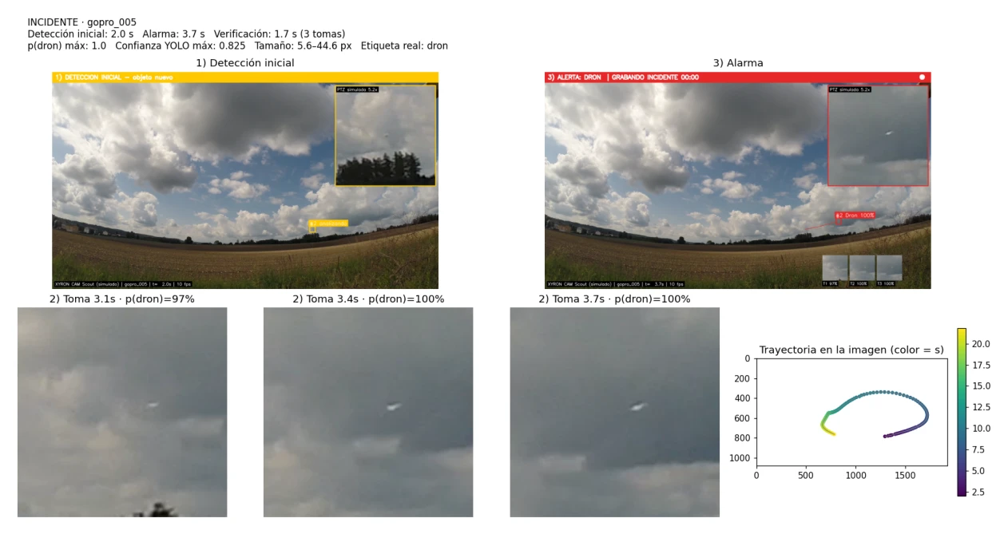

Detecta
Identifica la actividad de radio en 2.4 GHz de un dron cercano y la IA lo distingue de aves, aviones y hojas.
XYRON CAM Scout vigila el cielo sobre tu casa o empresa. Detecta drones, los sigue con su cámara y te manda la alerta con evidencia lista para denunciar.
Un dron con cámara cuesta menos que un celular y puede grabar tu patio, tus horarios y tus accesos desde decenas de metros de altura. Las cámaras de seguridad apuntan hacia abajo; nunca lo ven.
Dos sentidos trabajan juntos: un receptor de radio que escucha el enlace entre el dron y su control, y una cámara con inteligencia artificial que lo confirma visualmente.
Identifica la actividad de radio en 2.4 GHz de un dron cercano y la IA lo distingue de aves, aviones y hojas.
La cabeza motorizada gira e inclina la cámara para mantener al dron centrado mientras esté a la vista.
Graba video y capturas con fecha, hora, dirección y elevación de cada sobrevuelo.
Te avisa en el celular al instante y deja la evidencia lista para presentar ante la autoridad.
Elige un escenario y mira cómo Scout escucha la radio del dron, lo busca con la cámara, lo confirma con IA y empieza a grabar. Si pasa un ave, la identifica, la ignora y sigue vigilando. La radio identifica el enlace del dron hasta 150 m; la simulación llega a 200 m.
Escenario
También puedes tocar el radar para mover el dron.
Espectro de radio 2.4 GHz
Barrido de escucha: busca el enlace de control del dron hasta 150 m.
Eventos
Simulación ilustrativa: distancias, tiempos y comportamiento son aproximados y no son especificaciones del equipo. El giro de la maqueta respeta el rango del prototipo (pan ±90°, tilt de −10° a +90°). El barrido de radio es pasivo: Scout escucha, no emite ni interfiere.
Este es el modelo real de la Scout v4. Gíralo en la foto de 360° o cambia al 3D interactivo para ver cómo se mueve y cómo está hecha por dentro.
Color: Blanco ártico
Cuerpo blanco y aro oscuro, pensada para verse bien en una azotea, no para esconderse.
Render fotorrealista de la Scout v4 con sus materiales. Blanco ártico es el color de producción porque refleja más sol y ayuda a mantener fresco el interior; Arena es un color de concepto.
Pruebas del software de detección sobre grabaciones de vuelos reales: primero aparece un objeto, la IA lo verifica y, si es un dron, se dispara la alerta y empieza la grabación del incidente. El recuadro de la esquina simula el acercamiento de la cámara.


Las marcas en pantalla y los reportes vienen de una simulación del sistema sobre video grabado; no son capturas de un equipo Scout instalado.
Inteligencia artificial que corre dentro del equipo, carcasa sellada para exteriores y una sola conexión de corriente.
Cada sobrevuelo queda como un evento con video, capturas y datos del vuelo. Lo revisas, lo compartes o lo exportas para tu denuncia. Prueba la app aquí mismo: tócala como si fuera tu celular.
Alerta inmediataNotificación con la dirección del dron y una captura.
Historial de eventosTodos los sobrevuelos ordenados por fecha y duración.
Expediente para denunciarVideo, capturas, hora y dirección en un solo archivo.
Prototipo navegable con datos ilustrativos.
Cada Scout vigila 360° a su alrededor. Con un alcance de 150 m y un dron volando a 50 m de altura, cubre un círculo de unos 141 m de radio. Estos son tres ejemplos.
Estimación geométrica con un alcance supuesto de 150 m; el alcance real se medirá en las pruebas piloto y depende del dron, el clima y los obstáculos.
Especificaciones de diseño del prototipo Scout v4; pueden cambiar en la versión comercial.
Estamos construyendo el primer prototipo de Scout en León, Guanajuato. Escríbenos si quieres participar en las pruebas piloto, cotizar para tu empresa o fraccionamiento, o solo saber más.